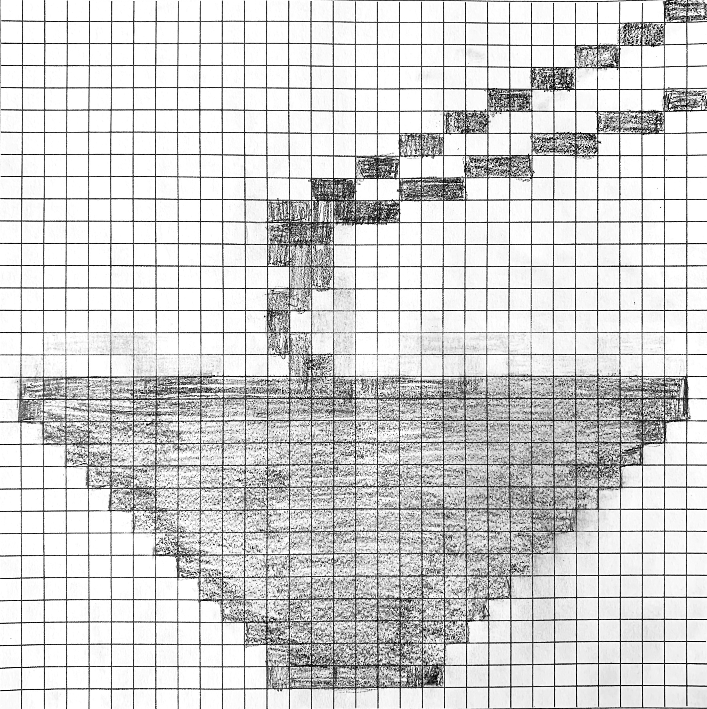

ARTS 412
Graphic Design Software II

Beibei Lubin
Beibei Lubin is currently studying at Binghamton University reciving her Bachelor's of Arts in Psychology with a minor in Graphic Design in May 2020. She works as a Special Events and Commencement Assistant for the Office of the President, has been a freelance photographer since September 2015, and previously worked for the Binghamton University Office of Communication and Marketing. Combining her acadeic background and vast experience, post-graduation, Beibei strives to work in the Luxury Events field.
Project 1: Riddle Book
One of the most transferrable skills to acquire is teamwork. During this Project 1, the entire class collaborated and spearheaded a typographic riddle book we entitled, "Riddle Me This." Not only did we work together to create a color palette, font, and branding style, but we created each work based off a movie title. Through months opf hard work and thorough communication, we have produced something we are genuinely proud of.
Project 2: Icon

This Bitmap icon was based off the 1984 original Macintosh iconography by Susan Kare. Originally, this sketch featured the essential bowl full of cereal, and maybe you can still see through the eraser marks on the page. Portraying the cereal to look as such was quite difficult to convey, so I went with the second most important meal of the day: lunch! On the menu today is noodles.

Project 3: Digital Storytelling
This project will focus on the sustainability and cruelty that exists within the small choices, such as the decisions we make when simply getting ready for the day. It will open with a Good Morning page as you wake up from your bed, which introduces the fact that you will begin your day and that each choice you make affects a greater whole. You will receive a checklist of things you need to do before you walk out the door: brush teeth, moisturize, get dressed, and eat breakfast. Brushing teeth and moisturizing will take place in the bathroom, getting dressed will take place in the bedroom, and eating breakfast will take place in the kitchen. There is no particular order to complete these tasks, but you must complete each in order to have gotten ready for the day. After each task is completed, a textbox will pop up, which will describe how that one decision influences the environment, animal cruelty, and human cruelty. There will also be three icons to symbolize each of the three factors that will pop up when you make a decision to show how impactful your decision was in regards to each of the three factors. For example, a completely filled footprint icon will symbolize that your decision had an extremely harmful impact on the environment. The other two icons include a paw print for animal cruelty and a hand for human cruelty. Once all the tasks are completed and you have finished getting ready for the day, you walk out the door, and a summary of all your decisions will appear, as well as the credits for research.
what's your brewprintPending:
Pending
Pending:
Pending
Pending:
Pending